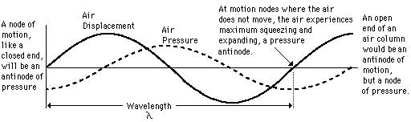

Displacement and Pressure
The standing waves associated with resonance in air columns have been discussed mainly in terms of the displacement of air in the columns. They can also be visualized in terms of the pressure variations in the column. A node for displacement is always an antinode for pressure and vice versa, as illustrated below. When the air is constrained to a node, the air motion will be alternately squeezing toward that point and expanding away from it, causing the pressure variation to be at a maximum. This view of resonant modes in terms of pressure waves makes it easier to see why the mouthpiece end of a wind instrument is a node for the resonances. For example, the clarinet is acoustically a closed-end cylindrical air column because the mouthpiece end acts as a pressure antinode.

|
Index
Wave concepts
Resonance concepts |